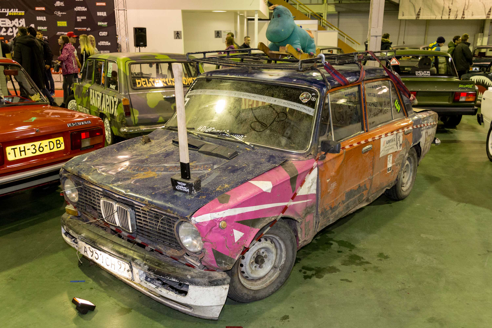
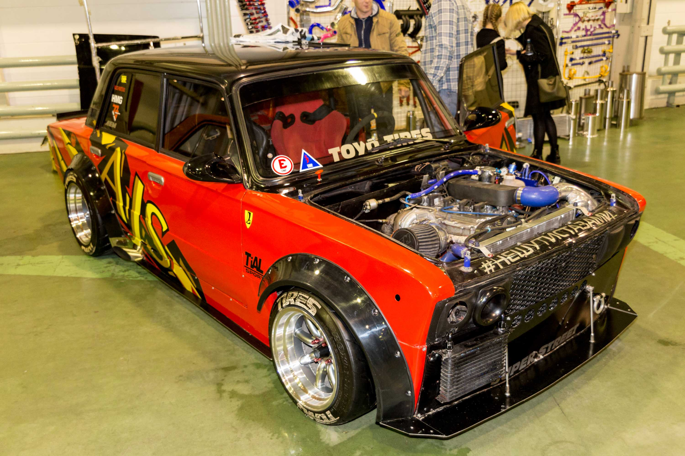
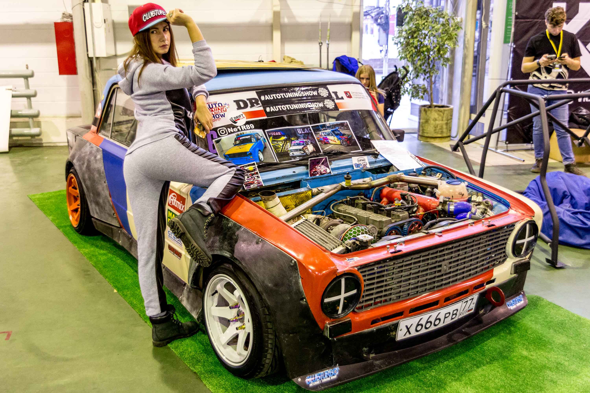
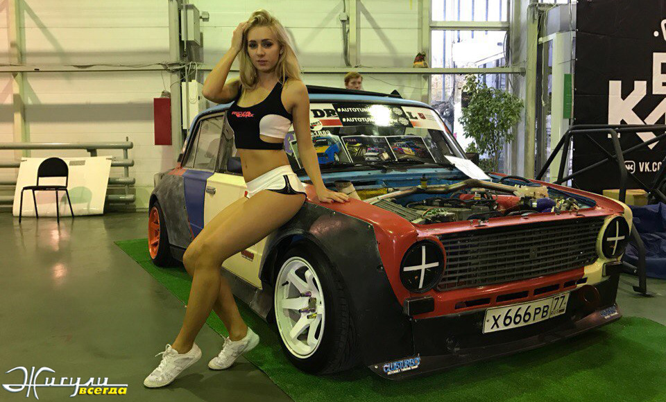
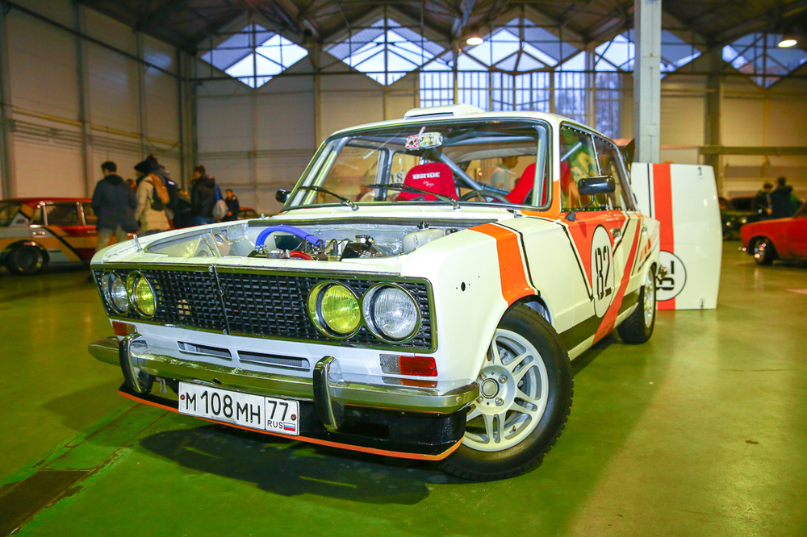
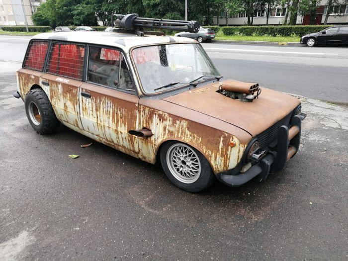
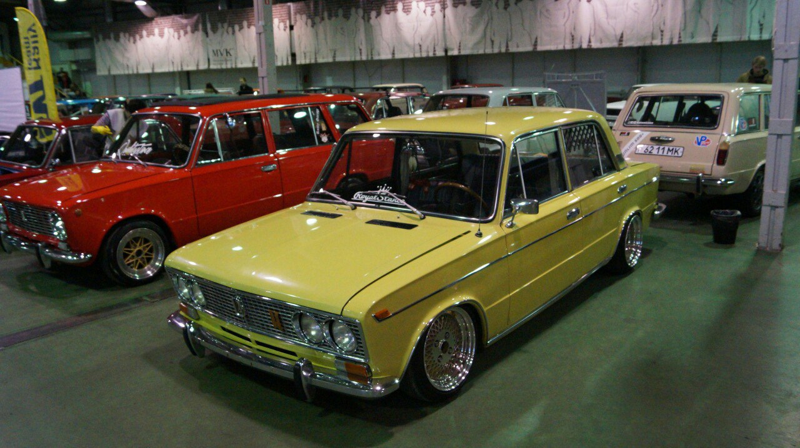

Sharaga drive 21
Основное направление: дрифт на жигулях, тюнинг жигулей.
Основное сообщество делится на "подвиды": Корчеводы - люди, занимающиеся серьезной подготовкой автомобиля под дрифт Любители БК полностью отрицают тонировку, так как "красивые пацаны тачки не тонируют" Основные пункты вроде расписал. Так же есть любители пожечь свои машины, как к ним относиться - решайте сами, подобные "самосожжения" обычно проходят в местах, где кроме этой машины гореть нечему.






